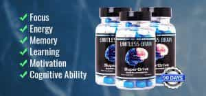

Sponsored Article is ROK's official account that publishes sponsored articles from advertisers. If you are interested hiring a sponsored article for your site, product, or service, visit our advertising page.


The following article was sponsored by Limitless Brain
Social anxiety is a major problem most people face. Even if you’re an outgoing guy, certain social situations, such as a business presentation or meeting girls at a bar, can trip you up. Human beings evolved to live life in small, tight-knit tribes, and social anxiety is in many ways a byproduct of the unnatural social environment we all live in. While some anxiety is natural, if you’re suffering from too much of it, it can seriously impact your success in your career, with girls and in other aspects of your life.
Fortunately, it’s possible for any man to reduce or kill his social anxiety and become a more confident, sociable person. Here are four ways you can lower your anxiety…

Most peoples’ anxiety and stress stems in part from concrete events in their lives. If you’re stressed out about something—paying the bills, issues at work, or a family/relationship issue—it’s going to show in your behavior. If you have major problems in your life, you need to work on resolving them before you do anything else.
Society teaches people that you can eliminate anxiety with pills prescribed by your doctor, but this is a recipe for long-term misery. While it is possible to use supplements to lower your anxiety (more on that later), no substance can substitute for solving the underlying problems. Ultimately, the most effective way to deal with sources of stress is to eliminate them if you can.
Much of your internal state is determined by your own thoughts and actions, and by training yourself to think and act positively, you can reduce your social anxiety considerably. Self-talk methods have been scientifically proven to help people achieve their goals and improve their lives.
Most people already unconsciously practice self-talk, but it’s negative self-talk. If you constantly—even jokingly—refer to yourself as an “asshole,” “crazy” or other negative terms, your brain will internalize them and they’ll become a self-fulfilling prophecy. By using positive affirmations, you can reshape your reality by training your mind to accomplish your goals, akin to Adam Savage’s quote, “I reject your reality and substitute my own.”
Keep in mind that your affirmations have to be realistic goals. Part of the positive affirmation process is finding out what you really want out of life and pursuing it. Remember the difference between a wish and a goal: a wish is something you’d like to happen but don’t really care about, while a goal is deeply-held and attainable. By reorienting the way you view the world, you can achieve the things that you once thought were impossible.
In many ways, sociability is like a muscle: if you don’t use it, you’ll lose it. If you live alone and barely talk to anyone during the course of your day, you’re going to be at a disadvantage when it comes time to be sociable. Priming your brain for social interaction isn’t something you can cram for, but a natural process that you have to engage in the moment you get out of bed in the morning.
If you have a big party or event coming up, you need to ease yourself into it by being as social as you can over the course of your day. Strike up conversations with store clerks and cashiers, say hi to people on the street, and generally try to be as friendly as you can, even if you don’t want to. Much in the same way that it’s better to practice learning something for a little bit each day instead of cramming in a single day, being social every day will naturally lower your anxiety levels.

While antidepressants and other doctor-prescribed mood-altering drugs are generally bad for you, there are legal, over-the-counter supplements you can take that will ease your social anxiety. If used properly, certain supplements can naturally lower your anxiety levels and put your mind at ease. For example, one of the most effective supplements for reducing anxiety is Limitless Brain. It contains eight natural nootropic ingredients, including l-theanine, huperzine A, and sulbutiamine, designed to lower your anxiety levels and improve your health in a natural fashion.
Keep in mind that like any other substance, these supplements can be abused and misused. You shouldn’t be using any substance as your sole method of fighting social anxiety; they can’t wallpaper over underlying issues in your life or natural insecurities. Supplements are an effective tool for fighting social anxiety, but you can only use them to enhance your existing state; if you have serious problems in your life and/or a negative mindset, you should work on those first.
While most people suffer from social anxiety to a certain degree, it’s a simple process to get rid of the anxiety that you do possess. By making changes in your day-to-day life, using certain supplements and altering your mindset, you can overcome your social anxiety and become a more charming and successful man.
Click here to purchase Limitless Brain and help end your social anxiety today.